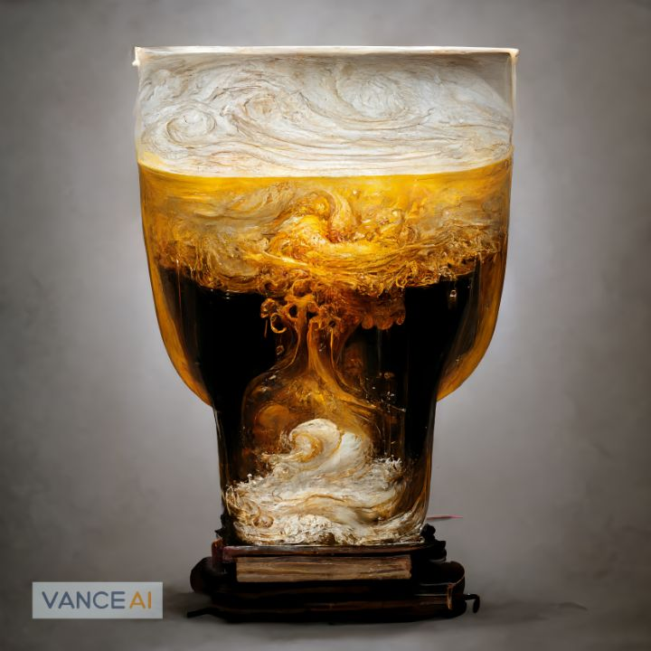

Odin's Secret Ale
The Forbidden Brew of the Gods
Embark on a mystic journey with Odin's Forbidden Beer, a divine ale whispered from the realms of the gods. Crafted from high-quality barley malt, sacred hops, and celestial yeast, this elixir, infused with Odin's whispered wisdom, achieves alchemical perfection when blended with ice-cold spring water. The discreet fermentation and maturation process unfold in secrecy, allowing the elixir to absorb the essence of Odin's wisdom. Each sip of this forbidden concoction offers an unparalleled taste, a symphony of flavors that dance on the palate and a sacred communion with the gods.
Odin's Forbidden Beer beckons the adventurous spirit with celestial bitterness and divine fermentation, capturing the essence of Odin's ancient wisdom. As the elixir is transferred with reverence into sealed vessels, it becomes more than a beverage; it becomes a conduit for a forbidden journey into realms unseen. Indulge in the richness of this extraordinary brew, where each sip becomes an ode to the mysticism woven into the fabric of Odin's Forbidden Beer.